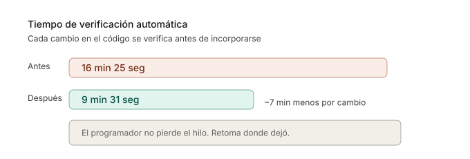

Cuando un programador hace un cambio, el sistema lo verifica antes de incorporarlo. Si esa verificación tarda quince minutos, el programador abre Twitter, revisa el mail, pierde el hilo. Cuando vuelve al código, tiene que reconstruir el contexto mental. Eso pasa varias veces al día.
En un cliente con un sistema monolítico de 9 años y un equipo que fue rotando, las verificaciones tardaban más de dieciséis minutos. Encontramos dos problemas: cada operación interna se estaba registrando en disco innecesariamente, y el servicio de verificación no estaba aprovechando su propio historial (estaba recalculando todo desde cero cada vez).
Corregimos las dos cosas. Las verificaciones bajaron de más de dieciséis minutos a menos de diez. Sigue siendo una espera, pero es la diferencia entre perder el contexto y mantenerlo.
Con verificaciones de menos de diez minutos, el programador puede correrlas en su propia máquina antes de subir el cambio. Ya no necesita empujar trabajo potencialmente incompleto a un servicio en la nube y esperar a ver qué pasa. La verificación pasa a ser parte del trabajo, no algo que le toca a "otro". Es la diferencia entre terminar una tarea y tirarla por arriba del cubículo esperando que alguien la atrape.

En un segundo cliente, un sistema nuevo generado en buena parte con asistentes de inteligencia artificial, descubrimos que solo el 61% del código tenía verificaciones automáticas. El resto era territorio sin mapa: los asistentes podían generar cambios ahí, pero nadie (ni humano ni máquina) se enteraba si algo se rompía.
Le pedimos a un asistente que agregara verificaciones archivo por archivo, priorizando los más importantes. En menos de media hora, la cobertura subió del 61% al 92%. También incorporamos revisiones de estilo automáticas para que el programador no tuviera que hacer ajustes cosméticos después.

El ciclo virtuoso
Acá hay algo que no es obvio: mejorar las verificaciones automáticas no solo ayuda a los programadores. Ayuda a los propios asistentes. Un asistente que genera código y puede verificar al instante si funciona, corrige solo. Uno que tiene que esperar quince minutos (o que no tiene verificaciones), entrega trabajo a medias y le pasa el problema al humano.
Verificaciones más rápidas y más completas hacen que los asistentes sean más efectivos, lo que a su vez permite mejorar más verificaciones. El equipo se mueve más rápido sin sacrificar calidad.
El mismo enfoque, en otros rubros
Lo que hicimos con verificaciones de código no es exclusivo de equipos de programación. El patrón se repite: hay un proceso repetitivo, propenso a errores, que frena a la persona que debería estar tomando decisiones. Un asistente se encarga de la parte mecánica, un humano revisa el resultado.
- Informes de obra. Un director de obra saca fotos y dicta notas desde el teléfono. Un asistente arma el informe con formato, lo cruza contra el cronograma, y lo marca donde hay desvíos. El director revisa y firma en vez de redactar.
- Cotejación de presupuestos. Tres proveedores mandan presupuestos en formatos distintos (PDF, mail, planilla). Un asistente los normaliza, arma un comparativo línea por línea, y señala dónde hay diferencias significativas. El decisor compara en vez de transcribir.
- Auditoría de documentación regulatoria. Una empresa tiene 200 procedimientos internos que deben cumplir una norma. Un asistente los cruza contra los requisitos y marca qué documentos están desactualizados o incompletos. El responsable de calidad prioriza en vez de releer todo.
- Traducción técnica con revisión. Manuales de operación, fichas de seguridad, instrucciones de montaje. Un asistente traduce y un revisor humano ajusta terminología específica del rubro. El volumen sube sin que baje la precisión.
- Resumen ejecutivo de reuniones. Tres socios charlan durante una cena y toman decisiones. La grabación se transcribe, un asistente extrae los acuerdos, los pendientes y quién se comprometió a qué. A la mañana siguiente, los tres tienen el mismo resumen.